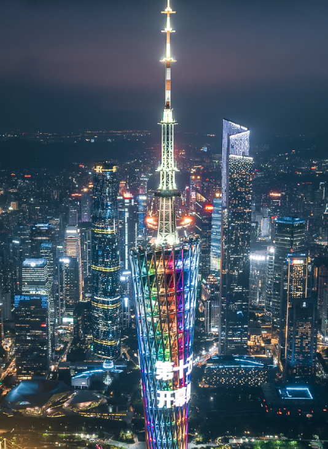

Guangdong — The Southern Gateway of China
Guangdong Province, situated on the southern coast of China along the South China Sea, is a land where ancient traditions harmonize with modern innovation. As the birthplace of Lingnan culture and the engine of China's economic reform, Guangdong offers visitors an unparalleled journey through time and experience.
From the historic trading ports of Guangzhou, which have welcomed merchants from across the globe for over two millennia, to the gleaming skyscrapers of Shenzhen, Guangdong captivates every traveler with its extraordinary diversity, warmth, and boundless creative energy.
Whether you seek the architectural splendor of ancestral halls, the refined flavors of Cantonese cuisine, or the breathtaking natural landscapes that stretch from karst peaks to tropical coastlines, Guangdong promises an adventure that will linger in your memory forever.
